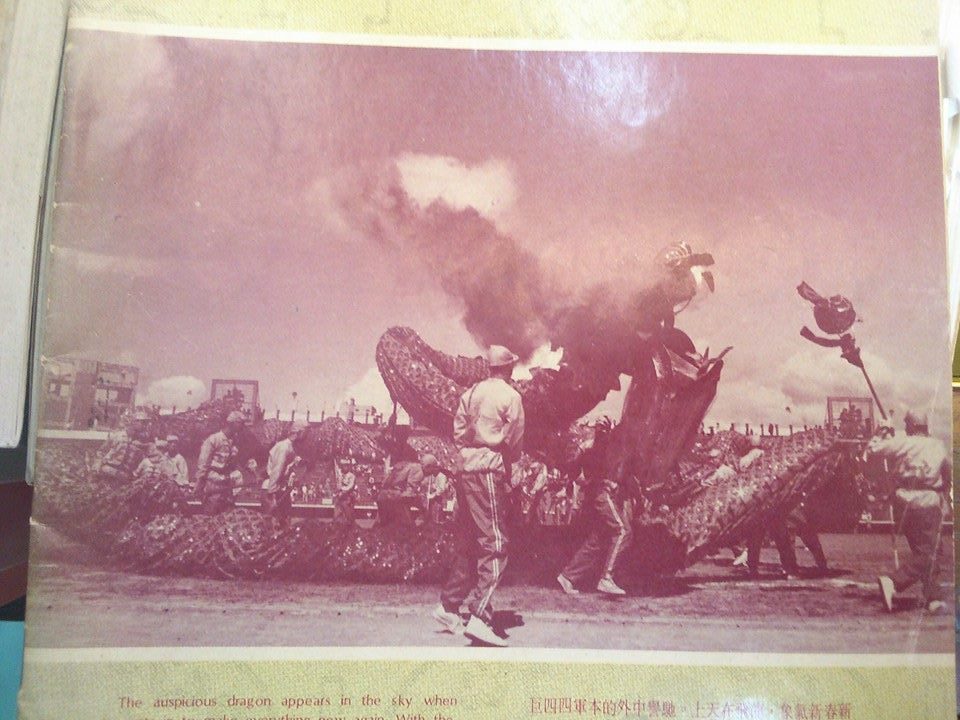
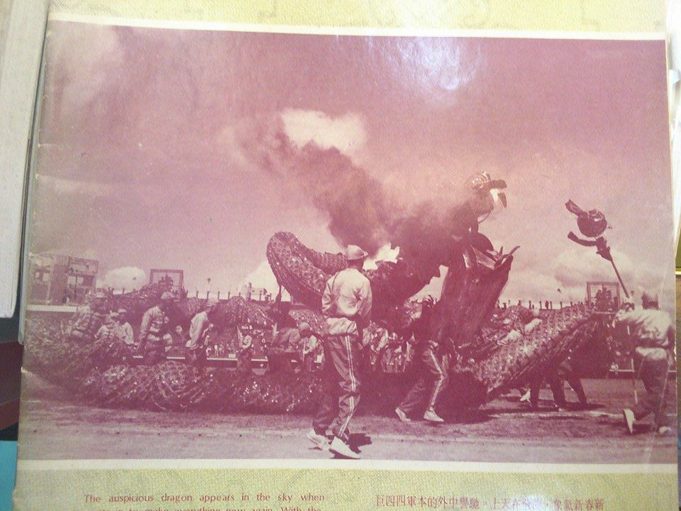

Activities
 

Zhang, Tian-zhi, the ex-44 South Village self management committee says: When the military came to Taiwan, they were expecting to fight back in less than 5 years, but time passes. The president Chiang Kai-shek held a series of recreation event to ease off the high-intensity mood in war, so the dragon dance competition was created. "But the resident in the 44 south village are mostly from the north, they don't specialize in dragon dance. They lose every competition. They came up with an idea, even though they might not win in skill, at least they cannot lose in momentum. They make the dragon 44 meters long to represent the 44 south village". Even though the 44 dragon has already faded in history, the memories it created consists in the heart of the previous generation.
In February, 1973, LianQing published a newspaper which contains the 44 dragon dance photo on the back of it. It says: "New Spring new outlook. Dragon in the sky"(Rhythms in Chinese). The award-winning 44 dragon dance performs on the street of Taipei, entertaining all citizens.